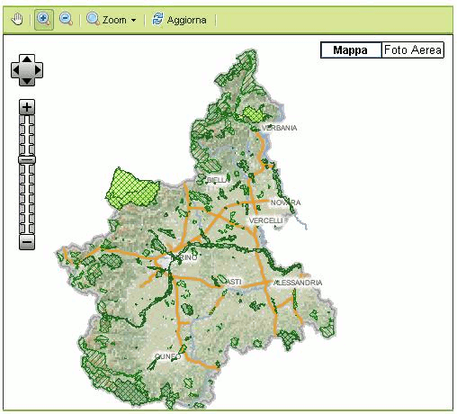

E' un widget utilizzabile per la visualizzazione di mappe GIS. Oltre alla semplice visualizzazione poò prevedere una serie di attività interattive, quali:
| cod. | nome | descrizione |
|---|---|---|
| apparenza grafica | ||
| WMAP012 | dimensionamento a "taglie" | Possibilità di impostare la dimensione della mappa in un range di
tre taglie:
|
| WMAP019 | overview map | Possibilità (opzionale) di mettere a disposizione una mappa di overview visualizzata, in miniatura, in un angoplo della mappa |
| WMAP020 | scalimetro | Possibilità di visualizzare uno scalimetro (che esplicita graficamente la scala correntemente visualzzata) |
| WMAP021 | indicatore coordinate | Possibilità di visualizzare opzionalmente le coordinate relative alla posizione corrente del puntatore. |
| WMAP022 | indicatore U.M. | Possibilità di visualizzare opzionalmente il tipo di unità di misura correntemente utilizzate |
| dinamica di interazione | ||
| WMAP001 | visibilità a comando | Modalità invisibile/visibile a comando |
| WMAP002 | profilazione della visibilità | Modalità invisibile/visibile a fronte di regole associate al profilo dell'utente collegato |
| WMAP004 | slide to zoom | Possibilità di effettuare lo zoom agendo su un'apposito controllo di tipo 'slider'. Lo zoom avviene entro un range prestabilito. |
| WMAP005 | click to zoom | Possibilità di effettuare lo zoom agendo su una serie di pulsanti
presenti nella barra di strumenti:
|
| WMAP006 | drag to pan | Possibilità di effettuare il pan della mappa puntando il mouse su un punto della mappa e trascinando il puntatore senza rilasciare il pulsante destro del mouse. La funzione di pan è utilizzabile quando l'utente ha selezionato la funzione nella barra degli strumenti |
| WMAP007 | click to pan | Possibilità di effettuare il pan della mappa utilizzando 4 tasti cursore rispettivamente per il pan in una delle 4 direzioni cardinali principali |
| WMAP008 | posizionamento programmatico | Possibilità di effettuare il posizionamento della mappa (in termini di envelope visualizzato (e di conseguenza di livello di zoom) da business logic |
| WMAP009 | refresh interattivo | Possibilità di effettuare il refresh della mappa cliccando su un apposito tasto |
| WMAP010 | refresh programmatico | Possibilità di effettuare il refresh della mappa a comando della business logic (a fronte di un evento di user interaction che non riguarda direttamente la mappa) |
| WMAP011 | layer switch | Possibilità (opzionale) di effettuare lo switch di sfondo della mappa (es. mappa / foto aerea) tramite un apposita coppia di pulsanti che appaiono sulla mappa se la funzionalità è abilitata. |
| WMAP013 | evento di click | Possibilità di scatenare una logica applicativa a fronte del click dell'utente su un punto della mappa. La logica verrà scatenata se l'utente ha selezionato la funzione nell'apposita barra degli strumenti. La logica di business ha a disposizione l'informazione delle coordinate del punto in cui l'utente ha cliccato. |
| WMAP016 | ruler | Possibilità (opzionale) di attivare uno strumento di misurazione lineare (da punto a punto) o areale (area selezionata) sulla mappa |
| WMAP017 | legenda | Possibilità di attivare opzionalmente la visualizzazione di una legenda relativa alla mappa. I contenuti della legenda sono forniti dal servizio cartografico. |
| WMAP018 | print map | Possibilità di inviare in stampa la mappa correntemente visualizzata |
| WMAP023 | editing di geometrie | Possibilità di editare geometrie (punti, poligoni, polilinee) sulla mappa.
L'editing avviene in due fasi:
|
| WMAP026 | limitazione tipologie di geometrie editabili | Possibilità da parte dello sviluppatore di inibire/abilitare solo un
sottoinsieme di tipologie di editing, scelte tra:
|
| WMAP027 | definizione comportamento disabilitazione | Il widget MapView è un widget complesso. Di conseguenza il
comportamento del widget in caso di disabilitazione deve essere definito
specificando puntualmente quali aspetti del widget devono essere disabilitati.
Le opzioni possibili (attivabili l'una indipendentemente dall'altra) sono:
|
| struttura | ||
| WMAP003 | includibilità in pannelli | Il widget può essere contenuto come unico widget nei seguenti pannelli:
|
| dati | ||
| WMAP014 | mappe grease | Permette la visualizzazione di mappe in standard GREASE e configurate su GISCOPW |
| WMAP015 | mappe non grease | Permette la visualizzazione di mappe in standard differenti da GREASE |
| WMAP024 | acetate layer | Possibilità di visualizzare un livello di geometrie (livello "acetato") al di sopra dei layer cartografici. L'insieme di geometrie visualizzate nel layer è popolato da business logic. Il layer è in sola lettura (non può essere oggetto di editing interattivo da parte dell'utente) |
| WMAP025 | pre-popolamento editing layer | Possibilità di pre-popolare un insieme di geometrie che saranno oggetto di editing. Il layer si comporta come l'acetate layer (WMAP024). L'insieme di geometrie visualizzate nel layer è popolato da business logic. |
|  |
| esempio di map view |
Nella tabella seguente è riportato il grado di implementazione delle varie caratteristiche/funzioni dell'elemento MapView nelle differenti implementazioni.
| cod | feature | guigen | |
|---|---|---|---|
| 1.6.0 | |||
| neutral-base | neutral-arricchita | ||
| apparenza grafica | |||
| WMAP012 | dimensionamento a "taglie" | |
|
| WMAP019 | overview map | |
|
| WMAP020 | scalimetro | |
|
| WMAP021 | indicatore coordinate | |
|
| WMAP022 | indicatore U.M. | |
|
| dinamica di interazione | |||
| WMAP001 | visibilità a comando | |
|
| WMAP002 | profilazione della visibilità | |
|
| WMAP004 | slide to zoom | |
|
| WMAP005 | click to zoom | |
|
| WMAP006 | drag to pan | |
|
| WMAP007 | click to pan | |
|
| WMAP008 | posizionamento programmatico | |
|
| WMAP009 | refresh interattivo | |
|
| WMAP010 | refresh programmatico | |
|
| WMAP011 | layer switch | |
|
| WMAP013 | evento di click | |
|
| WMAP016 | ruler | |
|
| WMAP017 | legenda | |
|
| WMAP018 | print map | |
|
| WMAP023 | editing di geometrie | |
|
| WMAP026 | limitazione tipologie di geometrie editabili | |
|
| WMAP027 | definizione comportamento disabilitazione | |
|
| struttura | |||
| WMAP003 | includibilità in pannelli | |
|
| dati | |||
| WMAP014 | mappe grease | |
|
| WMAP015 | mappe non grease | |
|
| WMAP024 | acetate layer | |
|
| WMAP025 | pre-popolamento editing layer | |
|